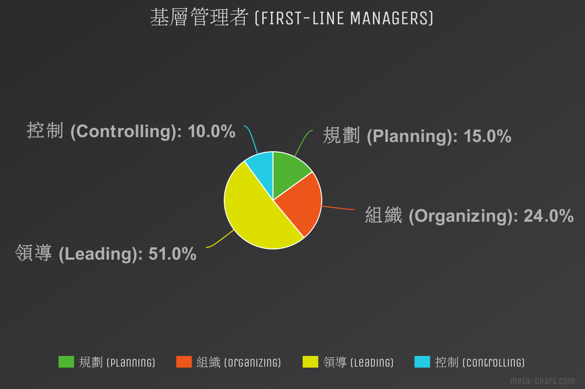
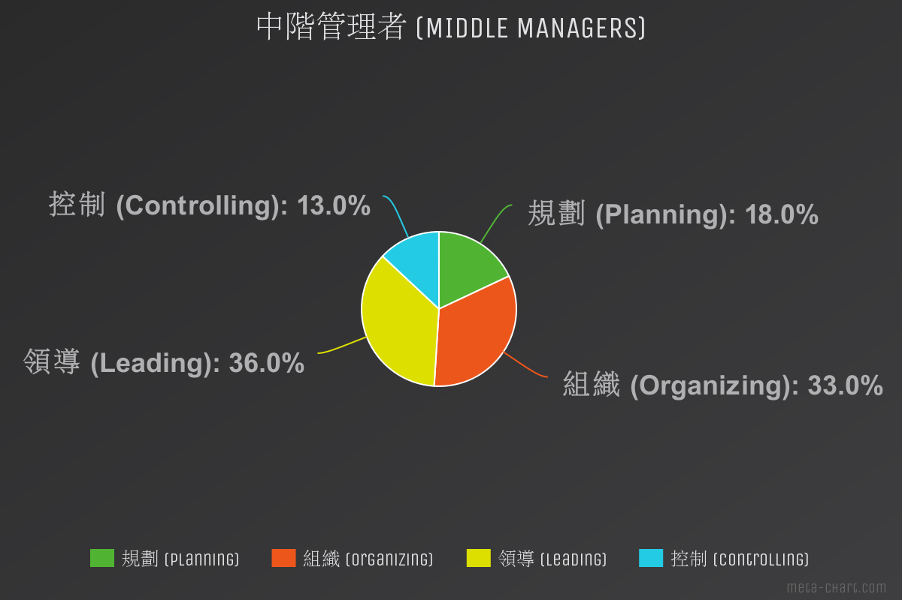
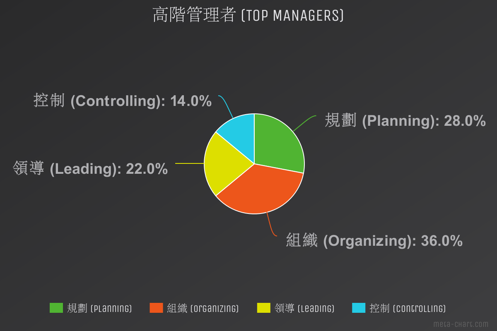

為什麼學習管理學？因為在這個社會，你不是管理別人、就是被人管理！你打算怎麼選擇？
# 學習目的
管理 (Management) 指的是 協調 及 監督 與他人的 業務，讓其有 效率、有 效能 地完成。
至於何謂「效能」、「效率」？
管理大師 彼得・杜拉克 (Peter Ferdinand Drucker) 是這麼說的：
- 效率 (Efficiency)
把事情做對 (Doing the thing right) 。
強調資源的有效利用，以最少投入得到最大產出。- 效能 (Effectiveness)
做對的事情 (Doing the right thing) 。
追求目標與方向正確性，將「完成工作活動以達成組織目標」看的比「資源的運用」更為重要。
# 廣義、狹義 的 組織結構
- 狹義
- 指為了實現組織的目標，組織理念下經過組織設計所形成的組織內部部門、各個層次之間的排列方式，即組織內部的構成方式。
- 廣義
- 包含狹義的組織結構。
- 「組織」主要是指有目的、系統的集合。
- 簡單來說，組織就是指為了實現一致的目標，而互相合作，集結而成的集體或團體， 如企業、黨團... 等。
# 管理 與 被管理
- 非管理者員工
- 直接從事工作與執行任務的人員，沒有監督其他人工作的責任。
- 管理者 (Managers)
- 在組織中負責指揮及監督下屬工作活動的人員，藉由協調他人來完成工作，以便達成組織目標，必要時也會親自執行任務。
- 管理者的工作著重在協助他人進行工作。
# 管理者階級
- 基層管理者 (First-Line Managers)
- 又稱第一線管理者 。負責非管理職員工作的管理，通常負責指揮他們的日常作業。
- 常見的基層管理者職位：
- 領班 (Supervisors)
- 組長 (Shift Managers)
- 課長 (Office Managers)
- 部門經理 (Department Managers)
- 單位協調者 (Unit Coordinators)
- 中階管理者 (Middle Managers)
- 負責管理基層管理者的活動。在管理者職位中，介於基層與高層之間 (
難做人)。- 常見的中階管理者職位：
- 部門經理或局長 (Department Or Agency Head)
- 專案領導者 (Project Leader)
- 單位主管 (Unit Chief)
- 地區經理 (District Manager)
- 事業部經理 (Division Manager)
- 店經理 (Store Manager)
- 高階管理者 (Top Managers)
- 屬於組織架構中位於或接近組織頂端的管理者。。負責全公司的決策，訂定全公司的計劃和目標。
- 常見的高階管理者職位：
- 副總經理 (Vice President)
- 總經理 (President)
- 校長 (Chancellor)
- 執行董事 (Managing Director)
- 營運長 (Chief Operating Officer)
- 執行長 (Chief Executive Officer)
- 董事長 (Chairperson Of The Board)
# 管理者該做些什麼？管理學四大功能！
起初，法國的管理學理論學家 Henri Fayol (亨利・法約爾) 歸類出的「古典管理理論 (法約爾主義)」為： 規劃 (Plan) 、 組織 (Organize) 、 命令 (Command) 、 協調 (Coordinated) 、 控制 (Control) 。
隨後，美國 UCLA 的教授 Harold Koontz 和 Cyril O'Donnell 提出管理五大功能： 規劃 (Planning) 、 組織 (Organizing) 、 人事 (Staffing) 、 領導 (Leading) 、 控制 (Controlling) 。
而在現代管理理論中，管理功能已被濃縮成四項： 規劃 (Planning) 、 組織 (Organizing) 、 領導 (Leading) 、 控制 (Controlling) 。
- 規劃 (Planning)
- 訂定組織發展的目標及方向及達成目的的方法。(錯的方向努力等同徒勞)
- 組織 (Organizing)
- 界定部門間的職掌、權責，透過安排和架構工作完成組織目標。
- 領導 (Leading)
- 目的在於激勵員工，使其自發性朝向組織目標努力，以提供最大貢獻。
- 控制 (Controlling)
- 檢視執行過程及結果，對重大差異提出修正，將錯誤的方向導回正軌，以確保組織目標的達成。
每個階層對於這四項管理功能的比重都有所不同：



# 管理者該具備什麼？
- 概念能力 (Conceptual Competencies)
- 掌握和協調組織的整體利益和活動。
- 人際關係能力 (Human Competencies)
- 以領導、激勵和溝通來達成組織的目標。
- 技術能力 (Technical Competencies)
- 利用特殊的技術，以完成特定的管理任務。
- 政治能力 (Political Competencies)
- 建立正確的關係或權力基礎。